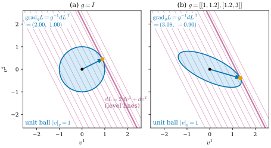
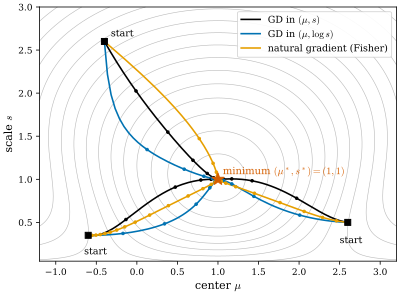
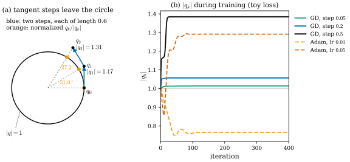
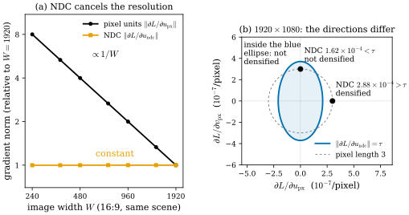

29.5 Optimizing Gaussians
Goals
- 3DGS가 최적화하는 parameter의 공간과, activation이 그것을 기하적 manifold로 보내는 방식을 설명할 수 있다.
- gradient는 covector이므로 update 방향을 정하려면 metric이 필요하고, 좌표를 고르는 것이 곧 metric을 고르는 것임을 \(s\)와 \(\log s\), natural gradient의 예로 설명할 수 있다.
- quaternion 정규화를 통과한 gradient가 \(T_{\hat q}S^3\)로의 projection을 \(\abs{q}\)로 나눈 것임을 유도하고, plain gradient descent에서 \(\abs{q}\)가 단조 증가해 실효 step이 줄어드는 것을 보일 수 있다. Adam에서는 왜 그렇지 않은지 말할 수 있다.
- Adam을 대각 metric으로 보는 해석과 Riemannian gradient descent + retraction이라는 대안을 비교하고, densification의 threshold가 화면 좌표의 metric에 의존한다는 것을 설명할 수 있다.
Prerequisites
- Section 0.7: \(df\)는 covector이고 chain rule은 pullback이다 (0.7.2). 같은 절의 상자 “reverse mode는 covector의 pullback이다”: transpose로 gradient를 vector로 바꾸는 것은 숨은 metric의 선택이다.
- Section 0.8: metric이 있으면 \(\grad f = g^{-1}df\) (0.8.3), hyperbolic plane, Riemannian optimization과 retraction
- Section 29.2: activation (29.2.4), rotation gradient (29.2.3). Section 29.3: 위치 gradient가 화면 좌표를 거쳐 온다는 것
- gradient descent와 Adam의 update 식 [Kingma15]
Motivation
Section 29.4에서 covariance의 공간에 metric을 고르는 일이 보간과 평균의 답을 바꾼다는 것을 보았다. 학습에도 같은 일이 숨어 있다. 학습은 parameter를 loss가 줄어드는 쪽으로 움직이는 일이다. 그런데 backpropagation이 주는 것은 Section 0.7에서 본 대로 covector \(dL\)이고, “움직일 방향”은 vector다. covector를 vector로 바꾸려면 metric이 필요하다((0.8.3)). 평범한 gradient descent는 지금 쓰는 좌표의 Euclidean metric을 말없이 고른다.
3DGS의 parameter에는 이 선택이 여러 군데 숨어 있다. scale을 \(s\)로 둘지 \(\log s\)로 둘지, quaternion을 정규화해서 쓸지, Adam을 쓸지, densification의 기준을 어떤 화면 좌표로 잴지가 모두 metric의 선택이다. 이 절은 그 선택들이 무엇을 바꾸는지를 장난감 문제와 수치로 본다.
The Parameter Space
3DGS는 Gaussian마다 다음 수들을 저장하고 최적화한다 [Kerbl23].
| stored parameter | space | activation | geometric object |
|---|---|---|---|
| mean \(\mu\) | \(\R^3\) | none | \(\R^3\) |
| quaternion \(q\) | \(\R^4 \setminus \{0\}\) | \(q/\abs{q}\), then \(R(\hat q)\) | \(\mathrm{SO}(3)\) |
| log-scale \(\ell\) | \(\R^3\) | \(s_i = e^{\ell_i}\) | \(\R^3_{\gt 0}\) |
| opacity logit \(o\) | \(\R\) | sigmoid | \((0, 1)\) |
| SH coefficients | \(\R^{48}\) | none | \(\R^{48}\) (Section 29.6) |
합하면 \(3 + 4 + 3 + 1 + 48 = 59\)개의 수다. activation은 이 59차원 parameter 공간을 58차원 manifold \(\R^3 \times \mathrm{SO}(3) \times \R^3_{\gt 0} \times (0, 1) \times \R^{48}\)으로 보낸다(Section 29.2). quaternion의 norm 한 차원이 남는다. loss \(L\)은 이 manifold의 점(그리고 \(\Phi\)로 만든 \(\Sigma\))에만 의존하므로, parameter에 대한 gradient는 chain rule로 끌어온 covector다.
\[ dL_{\text{param}} = dL_{\text{geom}} \circ dA, \]
여기서 \(A\)는 activation map이다. (0.7.2)의 pullback이 바로 이 식이고, backpropagation이 계산하는 것이 이것이다.
Gradients Are Covectors; Updates Need a Metric
parameter 공간의 한 점에서 metric \(g\)(SPD 행렬)를 고르면 covector \(dL\)에 대응하는 vector가 하나 정해진다.
\(g = I\)이면 보통의 gradient descent다. 기하적으로 \(\grad_g L\)의 방향은 \(g\)의 unit ball \(\{\abs{v}_g = 1\}\) 위에서 \(dL(v)\)를 가장 크게 만드는 방향, 곧 가장 가파른 오르막이다. “가파름”은 길이를 재는 법에 달려 있다.

Figure 29.5.1의 두 패널에서 자주색 등위선은 같다. 바뀐 것은 하늘색 unit ball뿐이다. 원에서는 등위선에 수직인 방향이 가장 가파르지만, 기울어진 ellipse에서는 ellipse가 가장 높은 등위선에 접하는 점이 가장 가파른 방향이고, 그것은 등위선에 수직이 아니다. 이 metric에서는 \(v^1\)으로 가는 것이 “싸고” \(v^2\)로 가는 것이 “비싸서”, 오르막을 오르면서 \(v^2\)를 조금 줄이는 것이 더 효율적이다.
좌표를 바꾸는 것도 metric을 바꾸는 것이다. \(\theta = h(\varphi)\)로 쓰고 \(\varphi\)에서 평범한 gradient descent를 하면, chain rule에 의해 \(\theta\)는 \(-\eta\,Dh\,Dh^{\mathsf T}\nabla_\theta L\)만큼 움직인다(1차까지). 곧 \(\theta\) 좌표에서 metric \(g = (Dh\,Dh^{\mathsf T})^{-1}\)을 쓴 gradient descent다. 가장 단순한 예가 scale이다.
Example 29.5.1 (scale versus log-scale). loss \(L(s)\)를 \(s \gt 0\)에 대해 줄인다고 하자. \(s\)에서 gradient descent를 하면 \(s \leftarrow s - \eta L'(s)\)이다. 3DGS처럼 \(\ell = \log s\)에서 하면 \(\partial L/\partial\ell = sL'(s)\)이므로
이다. 곧 log-scale의 gradient descent는 metric \(ds^2/s^2\)을 쓴 gradient descent이고(\(g^{-1} = s^2\)), update는 곱셈형이다. 이 metric은 단위를 바꾸는 \(s \mapsto cs\)에 불변이다(\(d(cs)^2/(cs)^2 = ds^2/s^2\)). \(\partial L/\partial\ell = sL'(s)\)가 같으면 0.1 mm짜리 Gaussian과 1 m짜리 Gaussian이 같은 비율로 움직인다. 또 \(\exp(\cdot) \gt 0\)이므로 어떤 step도 \(s\)를 음수로 만들지 않는다. \(s\)에서의 gradient descent는 그렇지 않다. 아래 장난감 문제(Figure 29.5.2의 loss)에서 \((\mu, s) = (-1.5, 0.3)\)인 작고 먼 Gaussian에 step \(0.3\)을 쓰면 한 번에 \(s \approx -0.12\)로 정의역 밖에 나간다. 같은 출발점에서 log-scale은 37번 만에 최솟값의 \(0.01\) 이내에 든다.
Verification: verify/v-29-5-optimizing-gaussians.py
metric을 더 적극적으로 고를 수도 있다. distribution의 family에는 자연스러운 metric인 Fisher information metric이 있고, 그것으로 \(dL\)을 vector로 바꾼 것을 natural gradient라 한다 [Amari98]. 1차원 Gaussian \(\mathcal N(\mu, s^2)\)의 family에서 Fisher metric은
이다. 이것은 Example 0.8.2(c)의 hyperbolic plane의 metric \((dx^2 + dy^2)/y^2\)과 같은 꼴이다(\(\mu = \sqrt2\,x\), \(s = y\)로 바꾸면 그 metric의 2배이므로 curvature는 \(-1/2\)로 일정하다). 작은 Gaussian(작은 \(s\)) 근처에서는 같은 \(d\mu\)가 크게 재지므로, natural gradient는 작은 Gaussian의 위치를 조심스럽게 움직인다. natural gradient의 1차 update는 parameter를 어떻게 다시 쓰든 같다. \((\mu, s)\)에서 계산하든 \((\mu, \log s)\)에서 계산하든 같은 \(s\)의 변화를 준다.
세 선택을 한 문제에서 비교하자. 화면 위의 1D footprint \(G(x) = \exp\big(-(x - \mu)^2/(2s^2)\big)\)(3DGS의 splat처럼 정점이 1)를 목표 \(\mu^* = 1\), \(s^* = 1\)에 맞추는 \(L^2\) loss \(L(\mu, s) = \int(G - G^*)^2\,dx\)를 쓴다. 이 적분은 닫힌 꼴이 있다.

Figure 29.5.2에서 세 출발점의 곡선들을 차례로 보자. 세 방법은 같은 등고선(같은 covector field)을 보고 있지만 서로 다른 길로 같은 별에 간다. 어느 것이 늘 낫지는 않다. 큰 Gaussian에서 출발하면 세 방법이 비슷하게 빠르지만(60–69번), 작은 Gaussian에서 출발하면 natural gradient가 가장 느리다. step을 \(0.3\)으로 키워 더 작고 먼 Gaussian \((-1.5, 0.3)\)에서 출발하면 차이가 극단적이 된다. \((\mu, s)\)의 gradient descent는 첫 step에서 \(s \lt 0\)이 되어 실패하고, natural gradient는 \(\mu\)를 거의 옮기지 못한 채 \(s\)만 \(0\)으로 줄여 멈추며, log-scale만 37번 만에 수렴한다(Example 29.5.1). 3DGS가 scale에 \(\exp\)를 쓰는 것을 이 장난감은 지지하지만, 이것은 한 문제의 관찰이다.
The Quaternion Normalization
3DGS는 정규화하지 않은 \(q \in \R^4 \setminus \{0\}\)을 저장하고, 쓸 때 \(\hat q = q/\abs{q}\)로 정규화한다. loss는 \(\hat q\)에만 의존한다. 이 정규화를 통과한 gradient의 기하를 보자.
Proposition 29.5.2 (gradient through \(q/\abs{q}\)). \(L(q) = \tilde L(q/\abs{q})\)이면
이다. 곧 \(\nabla_q L\)은 \(\hat q\)에서의 gradient를 tangent space \(T_{\hat q}S^3 = \{v : \inner{v}{\hat q} = 0\}\)로 projection한 것을 \(\abs{q}\)로 나눈 것이고, 특히 \(\inner{\nabla_q L}{q} = 0\)이다. 그러므로 plain gradient descent의 step \(\delta = -\eta\nabla_q L\)에 대해
이고, \(\hat q\)가 움직이는 각은 1차까지 \(\abs{\delta}/\abs{q} = \eta\,\big|(I_4 - \hat q\hat q^{\mathsf T})\nabla_{\hat q}\tilde L\big|/\abs{q}^2\)이다.
Derivation. \(n(q) = q/\abs{q}\)의 Jacobian matrix는 \(Dn(q) = (I_4 - \hat q\hat q^{\mathsf T})/\abs{q}\)이고 symmetric이다(\(\partial_j(q_i/\abs{q}) = \delta_{ij}/\abs{q} - q_iq_j/\abs{q}^3\)). chain rule로 covector를 당기면 \(\nabla_q L = Dn(q)^{\mathsf T}\nabla_{\hat q}\tilde L\)이다. \(Dn(q)\,q = 0\)이므로 \(\inner{\nabla_q L}{q} = 0\)이고, orthogonal인 두 vector의 합의 길이는 피타고라스 정리로 (29.5.5)다. 각은 \(\tan\vartheta = \abs{\delta}/\abs{q}\)에서 나온다.
\(q\) 방향은 submersion \(q \mapsto \hat q\)의 fiber(반직선) 방향이고(Section 29.2), loss가 그 방향으로는 변하지 않으므로 gradient에 그 성분이 없다. 그런데 gradient descent는 직선으로 움직이므로 접선 방향의 step이 sphere를 벗어나 바깥으로 나간다. 결과는 두 가지다. \(\abs{q}\)는 줄지 않고, 같은 크기의 \(\nabla_{\hat q}\tilde L\)에 대해 회전각은 \(1/\abs{q}^2\)에 비례해 작아진다. 저장된 quaternion이 길어질수록 rotation의 실효 learning rate가 저절로 줄어드는 셈이다. gradient에 잡음이 있으면(iteration마다 다른 view를 쓰는 학습처럼) 매 step의 \(\abs{\delta}^2\)가 쌓여 \(\abs{q}^2 = \abs{q_0}^2 + \sum_k\abs{\delta_k}^2\)로 계속 자란다.

Figure 29.5.3의 (a)에서 파란 step은 원에 접하는 방향인데, 직선으로 가므로 원 바깥에 떨어진다. 다음 step은 더 큰 원에 접하므로 같은 길이로도 회전각이 작다(\(31.0^\circ \to 27.2^\circ\)). (b)의 실선들이 이것을 실제 최적화에서 보인다. 점선(Adam)은 다르다. Adam은 \(\nabla_q L\)을 좌표마다 나누어 정규화하므로, update가 더 이상 \(q\)에 수직이 아니고 \(\abs{q}\)가 줄 수도 있다. 3DGS의 공식 구현은 rotation을 항등 quaternion \((1, 0, 0, 0)\)으로 시작하고 Adam으로 학습한다. 저장된 \(q\)는 다시 정규화하지 않고, \(\Sigma\)를 만들 때마다 \(q/\abs{q}\)로 정규화하며, 이 정규화의 gradient는 PyTorch의 자동미분이 (29.5.4)대로 계산한다. 그러므로 실제 학습에서 \(\abs{q}\)가 어떻게 변하는지는 Adam의 동역학이 정하고, 위의 단조성 진술은 그대로 적용되지 않는다.
Adam, Natural Gradient, and Retractions
Adam [Kingma15]은 gradient의 이동평균 \(m\)과 제곱의 이동평균 \(v\)로 좌표마다 \(\theta_i \leftarrow \theta_i - \eta\,\hat m_i/(\sqrt{\hat v_i} + \varepsilon)\)만큼 움직인다. (29.5.1)과 비교하면 이것은 대각 행렬 \(g = \diag(\sqrt{\hat v_i} + \varepsilon)\)을 metric으로 쓰고, gradient 대신 그 이동평균을 쓴 update로 볼 수 있다. 이것은 해석이다. 이 \(g\)는 점의 함수가 아니라 지난 gradient들의 함수이고 시간에 따라 변하므로, 엄밀한 뜻의 Riemannian metric은 아니다. 그래도 이 해석에서 두 가지가 바로 읽힌다.
- 단위의 선택이 곧 metric이다. Adam의 step은 각 좌표에서 대략 \(\eta\)이고 gradient의 크기에 거의 무관하다. 그래서 좌표 \(\theta_i\)를 \(c\theta_i\)로 바꾸면 그 좌표에서의 step은 그대로 \(\eta\)이고, 원래 좌표로는 \(\eta/c\)만큼 움직인다. 각 parameter 묶음에 따로 주는 learning rate가 바로 이 대각 metric을 정한다. 공식 구현은 위치의 learning rate(초기값 \(1.6 \times 10^{-4}\))에 scene extent(학습 카메라 중심들이 평균에서 떨어진 최대 거리의 1.1배)를 곱하는데, 위치의 단위를 장면 크기로 맞추는 선택으로 읽을 수 있다(해석이다).
- 작은 gradient도 큰 step이 된다. Example 29.2.3에서 거의 isotropic인 Gaussian의 rotation gradient는 \(s_i^2 - s_j^2\)에 비례해 작았다. Adam은 그 크기를 정규화하므로 그런 Gaussian도 rotation이 \(\eta\) 정도씩 움직인다. 공식 구현은 Adam의 \(\varepsilon\)을 \(10^{-15}\)으로 두므로 아주 작은 gradient도 거의 그대로 정규화된다. 방향의 정보는 여전히 작은 신호에서 오므로, 이 움직임이 얼마나 의미 있는지는 그 신호가 잡음에 비해 얼마나 큰지에 달려 있다(해석이다).
natural gradient는 metric을 Fisher information으로 고정한다 [Amari98]. 1차 update가 parametrization에 무관하다는 장점이 있지만, 3DGS의 loss는 distribution의 likelihood가 아니라 렌더링 오차이므로 Fisher metric이 “옳은” metric이라는 보장은 없다. Figure 29.5.2에서 작은 Gaussian에서 느렸던 것이 그 예다.
Riemannian gradient descent와 retraction은 rotation을 처음부터 \(\mathrm{SO}(3)\) 위에서 다룬다 [AMS], [Boumal]. (29.2.3)의 \(\nabla_\omega L = (\partial L/\partial\omega_1, \partial L/\partial\omega_2, \partial L/\partial\omega_3)\)는 bi-invariant metric(Remark 0.8.4)에 대한 Riemannian gradient를 Lie algebra의 좌표로 쓴 것이므로,
로 update하면 된다((0.6.7)의 Rodrigues formula). 정규화도 없고, 숨은 \(\abs{q}\)도 없고, \(q\)와 \(-q\)의 2대1 모호성도 없다. 다만 Proposition 29.2.2의 rank 저하는 \(\Phi\) 자체의 성질이므로 그대로 남는다. scale의 log-scale update는 이 관점에서 \(\R_{\gt 0}\) 위의 metric \(ds^2/s^2\)에 대한 Riemannian gradient descent이고, \(\exp\)가 그 exponential map이다.
Densification Uses the Norm of a Covector
3DGS는 Gaussian이 부족한 곳을 화면 공간의 위치 gradient로 찾는다. Gaussian이 보인 view(iteration)마다 view-space position gradient의 크기를 재고, 그 평균이 threshold \(\tau_{\mathrm{pos}} = 0.0002\) 이상이면 그 Gaussian을 clone하거나 split한다(공식 구현은 100 iteration마다 이 판정을 한다) [Kerbl23]. 그런데 Section 29.3의 \(\partial L/\partial u_0\)는 화면 위의 covector다. covector의 “크기” \(\abs{\partial L/\partial u_0}\)를 재려면 화면에 metric(정확히는 그 dual의 norm)이 있어야 하고, 보통은 그 gradient를 계산한 화면 좌표의 Euclidean norm을 쓴다. 따라서 threshold의 뜻은 어떤 화면 좌표를 쓰느냐에 달려 있다.
공식 구현은 이 gradient를 NDC 좌표(화면을 가로세로 \([-1, 1]\)로 정규화한 좌표)에 대해 계산한다. 픽셀 좌표와 NDC 좌표 사이에는 \(u_{\mathrm{px}} = \big((u_{\mathrm{ndc}} + 1)W - 1\big)/2\)가 있으므로 \(\partial L/\partial u_{\mathrm{ndc}} = (W/2)\,\partial L/\partial u_{\mathrm{px}}\)이고, 세로도 \(H/2\)배다. covector는 좌표 변환의 Jacobian을 곱해 끌려오기 때문이다. 결과적으로
이다. 이 metric이 하는 일은 둘이다. 하나는 해상도의 보정이다. 같은 장면을 가로세로 \(k\)배의 해상도로 렌더링한다고 하자. Gaussian의 footprint가 덮는 픽셀 수는 \(k^2\)배가 되고, 픽셀마다 평균하는 loss에서 픽셀 하나의 무게는 \(1/k^2\)배가 되며, footprint의 기울기 \(\partial G/\partial u_{\mathrm{px}}\)는 footprint가 \(k\)배 넓어지므로 \(1/k\)배가 된다. 그래서 픽셀 단위 gradient는 대략 \(1/k\)배가 되고, (29.5.7)의 \(W/2\)가 이것을 상쇄한다. NDC norm은 해상도에 거의 무관하다. 다른 하나는 방향에 따른 무게다. NDC의 한 단위는 가로로 \(W/2\) px, 세로로 \(H/2\) px이므로, \(W \ne H\)이면 픽셀 단위로 같은 크기의 gradient라도 가로 방향이 세로 방향보다 \(W/H\)배 크게 재진다. 이 두 성질은 공식 구현의 정규화에서 따라 나오는 결과이고, 해상도에 대한 논증은 L1 loss를 기준으로 한 근사다(SSIM 항은 창의 크기가 픽셀 단위로 고정되어 있어 정확히 따르지 않는다).

τ, densified라고 적혀 있다. 점 (0, 3)은 ellipse 안에 있고 NDC 1.62×10⁻⁴ < τ, not densified라고 적혀 있다. 왼쪽 위에 inside the blue ellipse: not densified라는 주석이 있다.">Figure 29.5.4의 (a)를 먼저 보자. 같은 장면을 해상도만 바꿔 렌더링하면 검은 선(픽셀 단위 gradient)은 해상도에 반비례해 내려가고, 주황 선(NDC)은 수평이다. 그래서 -r 옵션으로 영상을 줄여 학습해도 같은 \(\tau_{\mathrm{pos}} = 0.0002\)를 대략 같은 뜻으로 쓸 수 있다. NDC로 재는 것을 이렇게 읽는 것은 해석이지만, 그 결과는 (a)의 수치로 확인된다. 이제 (b)를 보자. \(1920 \times 1080\)에서 파란 ellipse는 세로로 길다. 가로 성분에 \(W/2 = 960\), 세로 성분에 \(H/2 = 540\)의 무게가 붙기 때문이다. 회색 원 위의 두 점은 픽셀 단위로 길이가 같지만, 가로 방향의 점만 ellipse 밖에 있다. 화면비가 1이 아닌 영상에서는 화면 가로로 당겨지는 Gaussian이 세로로 당겨지는 Gaussian보다 쉽게 densify된다.
이 norm에는 다른 미묘함도 있다. 한 view에서 \(\partial L/\partial u_0\)는 Gaussian이 덮은 픽셀들의 기여(각각 covector)의 합이다. 서로 반대 방향으로 당기는 픽셀들은 합에서 상쇄되므로, 합의 norm은 각 norm의 합보다 작을 수 있다(예: 기여 \((1, 0.2)\), \((-0.9, -0.1)\), \((0.2, 0)\)의 합의 norm은 0.32, norm의 합은 2.13). 큰 Gaussian이 양쪽으로 당겨지는 경우 이 기준이 그것을 놓칠 수 있다는 뜻이다. 공식 구현은 view마다 합을 구한 뒤 그 norm을 view에 걸쳐 평균한다. 이 상쇄를 지적하고, 픽셀별 기여를 더하기 전에 성분마다 절댓값을 취하는 기준(homodirectional gradient)으로 바꾼 후속 연구가 있다 [Ye24].
Summary
- 3DGS의 Gaussian 하나는 59개의 수(\(\mu\), \(q\), log-scale, opacity logit, SH 48개)이고, activation이 이것을 58차원 manifold로 보낸다. backpropagation은 이 사이의 pullback이다.
- gradient는 covector이므로 update에는 metric이 필요하다 (29.5.1). 좌표를 바꾸는 것이 metric을 바꾸는 것이다. log-scale의 gradient descent는 scale에 불변인 metric \(ds^2/s^2\)의 gradient descent이고 곱셈형이다. Fisher metric은 hyperbolic plane과 같은 꼴이다.
- \(q/\abs{q}\)를 통과한 gradient는 \(T_{\hat q}S^3\)로의 projection을 \(\abs{q}\)로 나눈 것이다. plain gradient descent에서 \(\abs{q}\)는 줄지 않고 회전각은 \(1/\abs{q}^2\)로 작아진다. Adam에서는 이 단조성이 깨진다.
- Adam은 대각 metric으로 볼 수 있고(해석), learning rate와 단위의 선택이 그 metric이다. \(\mathrm{SO}(3)\) 위의 retraction update \(R\exp(-\eta[\nabla_\omega L]_\times)\)는 숨은 자유도를 없앤다.
- densification의 기준 \(\tau_{\mathrm{pos}}\)는 covector의 norm이므로 화면 좌표의 metric에 의존한다. 공식 구현의 NDC metric은 해상도 변화를 대략 상쇄하지만, 화면비가 1이 아니면 방향마다 다른 무게를 준다.
다음 절에서는 Gaussian의 마지막 parameter인 색을 본다. 보는 방향에 따라 달라지는 색은 sphere \(S^2\) 위의 함수이고, 3DGS는 그것을 spherical harmonics로 쓴다. spherical harmonics는 \(S^2\)의 Laplace–Beltrami operator의 eigenfunction이고, Gaussian을 돌리면 그 coefficient도 정해진 행렬로 돌려야 한다.
Quick check
Exercise 29.5.1 ★ \(L'(s) = 0.5\), 학습률 \(\eta = 0.1\)일 때 \(s = 2\)와 \(s = 0.02\)에서 각각 \(s\)의 gradient descent 한 step과 \(\log s\)의 gradient descent 한 step을 계산하여라.
Solution
\(s = 2\): \(s\)에서는 \(2 - 0.1 \cdot 0.5 = 1.95\), \(\log s\)에서는 (29.5.2)로 \(2\exp(-0.1 \cdot 2 \cdot 0.5) = 2e^{-0.1} \approx 1.810\)이다. \(s = 0.02\): \(s\)에서는 \(0.02 - 0.05 = -0.03\)으로 정의역 밖이고, \(\log s\)에서는 \(0.02\,e^{-0.001} \approx 0.01998\)로 0.1%만 줄어든다. log-scale은 큰 scale은 크게, 작은 scale은 작게(비율로) 움직인다. metric \(ds^2/s^2\)에서 같은 covector가 \(s^2L'(s)\)라는 vector가 되기 때문이다.
Verification: verify/v-29-5-optimizing-gaussians.py
Exercise 29.5.2 ★ \(\abs{q_0} = 1\)에서 시작해 plain gradient descent의 step이 매번 길이 \(0.1\)이었다면 100번 뒤의 \(\abs{q}\)는 얼마인가? 그때 같은 길이의 step이 주는 회전각은 처음의 몇 배인가?
Solution
(29.5.5)를 100번 쓰면 \(\abs{q}^2 = 1 + 100 \cdot 0.01 = 2\)이므로 \(\abs{q} = \sqrt2\)이다. 회전각은 \(\abs{\delta}/\abs{q}\)이므로 \(1/\sqrt2 \approx 0.71\)배다. 같은 \(\nabla_{\hat q}\tilde L\)이라면 step 길이도 \(1/\abs{q}\)로 줄어((29.5.4)) 회전각은 \(1/\abs{q}^2 = 1/2\)배가 된다.
Verification: verify/v-29-5-optimizing-gaussians.py
Exercise 29.5.3 ★ \(1920 \times 1080\) 영상을 \(960 \times 540\)으로 줄여 같은 장면을 학습한다. (a) 픽셀 단위로 같은 gradient라면 NDC norm은 몇 배가 되는가? (b) 실제로는 같은 Gaussian의 픽셀 단위 gradient가 대략 몇 배가 되는가(Figure 29.5.4의 논증)? (c) 그러면 \(\tau_{\mathrm{pos}}\)를 바꿔야 하는가?
Solution
(a) (29.5.7)에서 NDC norm은 \(W/2\), \(H/2\)에 비례하므로 반이 된다. (b) 해상도가 \(k = 1/2\)배이면 footprint가 덮는 픽셀 수는 \(1/4\)배, 픽셀 하나의 loss 무게는 4배, footprint의 기울기는 2배이므로 픽셀 단위 gradient는 대략 \(1/4 \cdot 4 \cdot 2 = 2\)배가 된다. (c) (a)와 (b)가 상쇄되어 NDC norm은 대략 그대로이므로, 같은 \(\tau_{\mathrm{pos}}\)를 써도 대략 같은 Gaussian이 골라진다. 이것이 NDC로 재는 것의 이점이다. 다만 이 논증은 L1 loss에 대한 근사이고, 두 해상도의 화면비가 같으므로 가로·세로의 상대적 무게는 그대로다.
Verification: verify/v-29-5-optimizing-gaussians.py
Exercise 29.5.4 ★★ scale의 단위를 바꿔 \(\tilde s = cs\)(\(c \gt 0\))로 쓴다. \(\log\tilde s\)에서의 gradient descent와 \(\log s\)에서의 gradient descent가 같은 Gaussian의 움직임을 줌을 보여라. \(\tilde s\)에서의 gradient descent는 \(s\)에서의 것과 같은가?
Solution
\(\log\tilde s = \log s + \log c\)이므로 두 좌표는 상수만큼 차이 나고, \(\partial L/\partial\log\tilde s = \partial L/\partial\log s\)이다. 같은 step \(-\eta\,\partial L/\partial\log s\)가 두 좌표에서 같은 변화를 주므로 Gaussian은 똑같이 움직인다. metric으로는 \(d\tilde s^2/\tilde s^2 = ds^2/s^2\)이다. 반면 \(\partial L/\partial\tilde s = L'(s)/c\)이고 \(\tilde s\)의 step \(-\eta L'(s)/c\)는 \(s\)로 \(-\eta L'(s)/c^2\)이다. 같은 \(\eta\)라도 단위에 따라 \(c^2\)배 다르게 움직인다. Euclidean metric \(ds^2\)은 단위에 불변이 아니다.
Exercise 29.5.5 ★★ 참인지 거짓인지 판별하고 이유를 써라. “Adam은 gradient를 좌표마다 정규화하므로 parameter의 단위(scale)를 바꿔도 Gaussian의 움직임이 같다.”
Solution
거짓이다. 좌표 \(\varphi_i = c_i\theta_i\)에서 Adam을 돌리면 gradient가 \(1/c_i\)배가 되지만 Adam은 그것을 정규화하므로, \(\varphi\)에서의 step(수치)은 \(\theta\)에서 돌렸을 때와 같다(\(\varepsilon \to 0\)에서). 그런데 그것을 \(\theta\)로 되돌리면 \(1/c_i\)배다. 곧 Adam의 step 크기는 gradient의 크기에는 무관하지만 좌표의 단위에는 그대로 묶여 있다. 단위(또는 parameter 묶음별 learning rate)를 고르는 것이 Adam의 대각 metric을 고르는 일이다. 3DGS가 위치의 learning rate에 장면의 크기를 곱하는 것은 위치의 단위를 장면 크기로 맞추는 선택으로 볼 수 있다.
Verification: verify/v-29-5-optimizing-gaussians.py